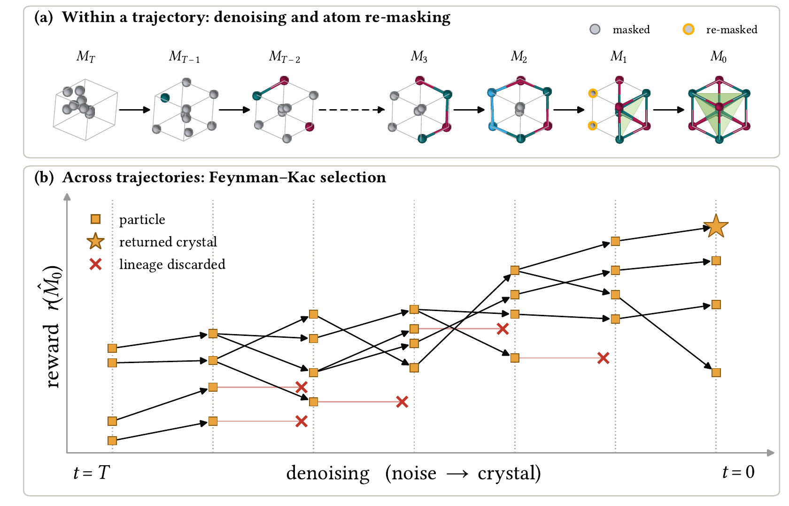
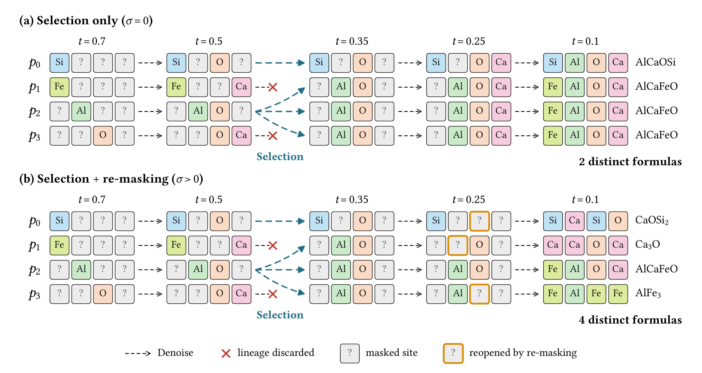
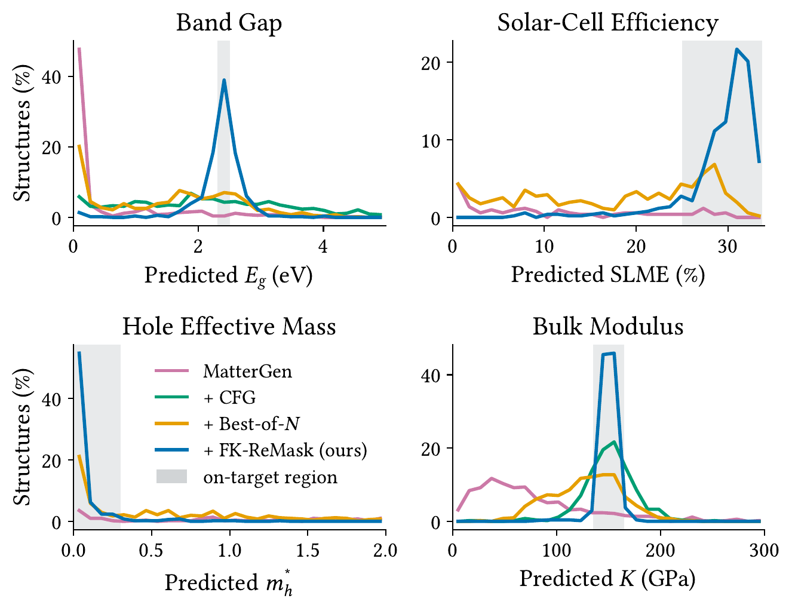
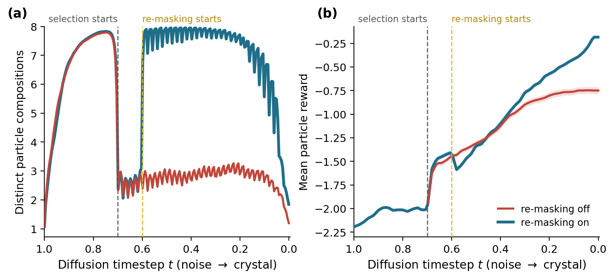
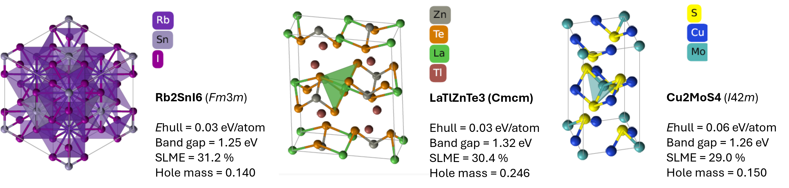

FK-ReMask
Multi-property Feynman-Kac Steering of Crystal Diffusion Models
Abstract
Pretrained diffusion models provide powerful priors for generating new materials, including inorganic crystals, but generating useful materials requires satisfying specific chemical and physical properties, from mechanical stiffness to band gaps. Existing approaches either retrain models for new target properties or steer only the atom coordinates and lattice during generation, leaving composition unchanged despite its fundamental role in determining physical properties. We present FK-ReMask, an inference-time, gradient-free method that steers both the continuous and discrete channels of a pretrained crystal diffusion model. During generation, FK-ReMask maintains multiple denoising trajectories and replicates promising candidates using Feynman–Kac particle selection. However, selection alone is insufficient: in the atom-type channel, committed elements cannot be revised, so cloning propagates existing compositions and limits the population's ability to explore new ones. We address this with an atom re-masking mechanism, which reopens committed sites during the generation process and allows alternative compositions to emerge. Across four electronic, photovoltaic, and mechanical objectives, our method improves the yield of SUN (stable, unique, novel) and property-on-target materials. We further demonstrate joint steering of three photovoltaic properties, showing that multiple physical objectives can be specified entirely at inference time without retraining.
Method

Overview of FK-ReMask. (a) Within a single trajectory, the model denoises the crystal while atom re-masking reopens committed atom sites, so the composition can still change. (b) Across trajectories, reward-guided Feynman–Kac selection prunes weak candidates and clones promising ones.

Atom re-masking under selection. Four particles go through denoising, selection and re-masking; cells show the element at each atom site. (a) Without re-masking, selection hands the winning particles more slots, which reduces the diversity of the final compositions. (b) With re-masking, committed sites reopen inside the re-masking window, yielding four distinct formulas.
Results

Distribution of target properties. Property histograms of crystals generated by each method, with the on-target region shaded. For solar-cell efficiency and hole effective mass, only gapped structures (Eg ≥ 0.5 eV) are plotted, since these properties do not apply to metals; percentages are over all 512 generated crystals.

Band-gap steering with and without re-masking. Dashed lines mark where selection and re-masking begin. (a) Selection collapses the population; with re-masking on, diversity is restored. (b) Re-masking reaches a higher mean particle reward.

Example crystals generated by FK-ReMask under joint steering of three photovoltaic properties (band gap, solar-cell efficiency and hole effective mass). Property values are predicted with pretrained ML models.
BibTeX
@article{mousai2026fkremask,
title = {Multi-property Feynman-Kac Steering of Crystal Diffusion Models},
author = {Mousai, Oded and Yiflach, Sapir Esther and Davidovitch, Barak Itzchak and
Mualem, Yuval and Kraus, Sarit and Barad, Hannah-Noa and Kreis, Karsten and
Chechik, Gal},
journal = {arXiv preprint},
year = {2026}
}